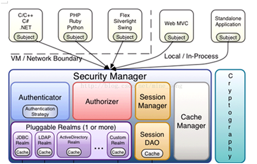
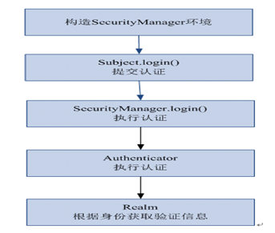
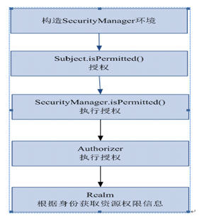

shiro的工作原理
本文于405天之前发表，文中内容可能已经过时。
什么是shiro
hiro是apache的一个开源框架，是一个权限管理的框架，实现 用户认证、用户授权。
spring中有spring security (原名Acegi)，是一个权限框架，它和spring依赖过于紧密，没有shiro使用简单。
shiro不依赖于spring，shiro不仅可以实现 web应用的权限管理，还可以实现c/s系统，分布式系统权限管理，shiro属于轻量框架，越来越多企业项目开始使用shiro。1
使用shiro实现系统的权限管理，有效提高开发效率，从而降低开发成本。
shiro架构

subject：主体，可以是用户也可以是程序，主体要访问系统，系统需要对主体进行认证、授权。
securityManager：安全管理器，主体进行认证和授权都是通过securityManager进行。
authenticator：认证器，主体进行认证最终通过authenticator进行的。
authorizer：授权器，主体进行授权最终通过authorizer进行的。
sessionManager：web应用中一般是用web容器对session进行管理，shiro也提供一套session管理的方式。
SessionDao： 通过SessionDao管理session数据，针对个性化的session数据存储需要使用sessionDao。
cache Manager：缓存管理器，主要对session和授权数据进行缓存，比如将授权数据通过cacheManager进行缓存管理，和ehcache整合对缓存数据进行管理。
realm：域，领域，相当于数据源，通过realm存取认证、授权相关数据。
\**注意：在realm中存储授权和认证的逻辑。**/
cryptography：密码管理，提供了一套加密/解密的组件，方便开发。比如提供常用的散列、加/解密等功能。
比如 md5散列算法。
认证过程

认证执行流程
1、通过ini配置文件创建securityManager
2、调用subject.login方法主体提交认证，提交的token
3、securityManager进行认证，securityManager最终由ModularRealmAuthenticator进行认证。
4、ModularRealmAuthenticator调用IniRealm(给realm传入token) 去ini配置文件中查询用户信息
5、IniRealm根据输入的token（UsernamePasswordToken）从 shiro.ini查询用户信息，根据账号查询用户信息（账号和密码）
如果查询到用户信息，就给ModularRealmAuthenticator返回用户信息（账号和密码）
如果查询不到，就给ModularRealmAuthenticator返回null
6、ModularRealmAuthenticator接收IniRealm返回Authentication认证信息
如果返回的认证信息是null，ModularRealmAuthenticator抛出异常（org.apache.shiro.authc.UnknownAccountException）
如果返回的认证信息不是null（说明inirealm找到了用户），对IniRealm返回用户密码 （在ini文件中存在）和 token中的密码 进行对比，如果不一致抛出异常（org.apache.shiro.authc.IncorrectCredentialsException）
##授权流程

1、对subject进行授权，调用方法isPermitted（"permission串"）
2、SecurityManager执行授权，通过ModularRealmAuthorizer执行授权
3、ModularRealmAuthorizer执行realm（自定义的Realm）从数据库查询权限数据调用realm的授权方法：doGetAuthorizationInfo
4、realm从数据库查询权限数据，返回ModularRealmAuthorizer
5、ModularRealmAuthorizer调用PermissionResolver进行权限串比对
6、如果比对后，isPermitted中"permission串"在realm查询到权限数据中，说明用户访问permission串有权限，否则 没有权限，抛出异常。
赏
 支付宝打赏
支付宝打赏
 微信打赏
微信打赏
支付宝打赏
微信打赏
如果文章对你有帮助，欢迎点击上方按钮打赏作者